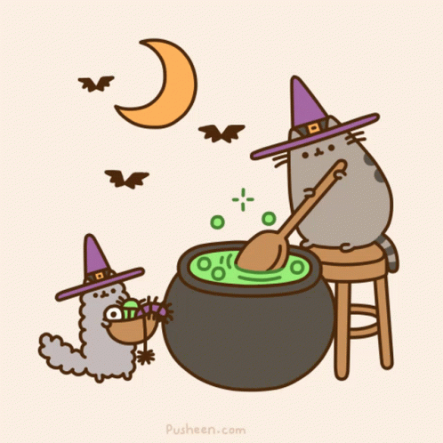
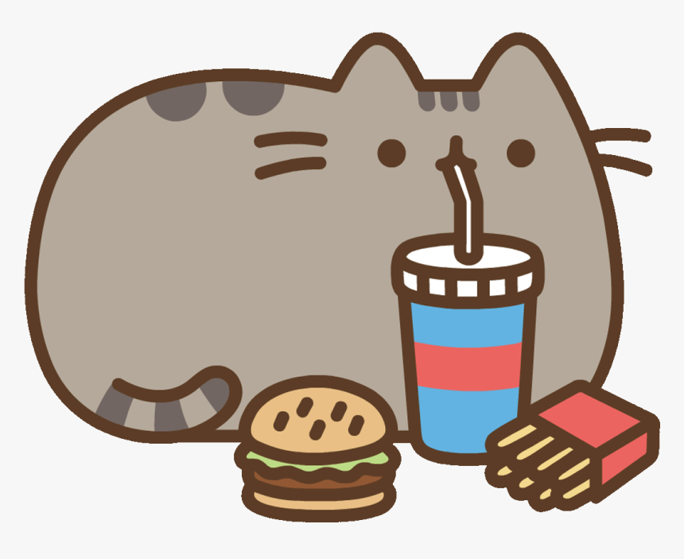

Challenge
This lab was about advanced block-level styling and understanding block elements by positioning elements, display properties, centering images, and formatting images.
Problems
The only problems that occured in this lab was trying to add the new elements with my already existing code. The other problem I ran into was adding a background. With the other pictures it altered my code with the background.
Results
Take a look!
Floated
can i get a number 2 with some mac sauce
